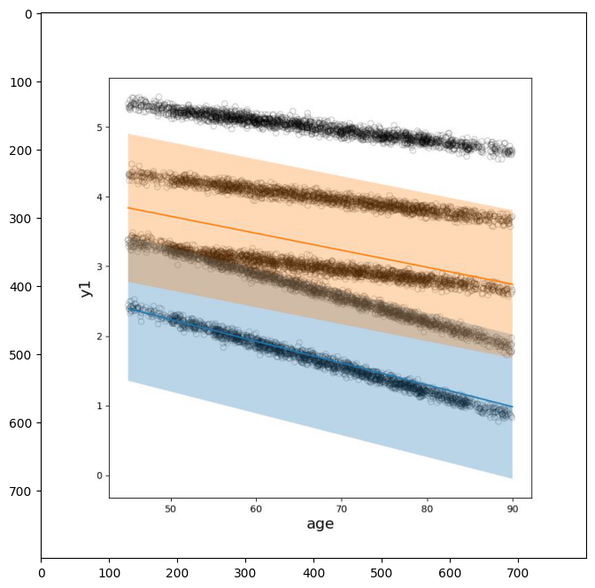
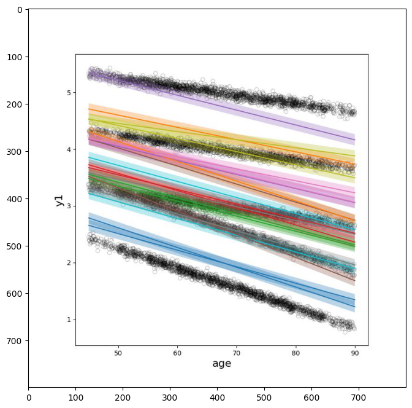
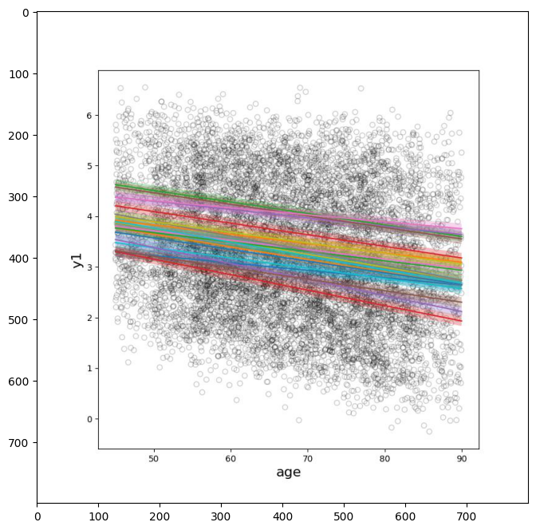
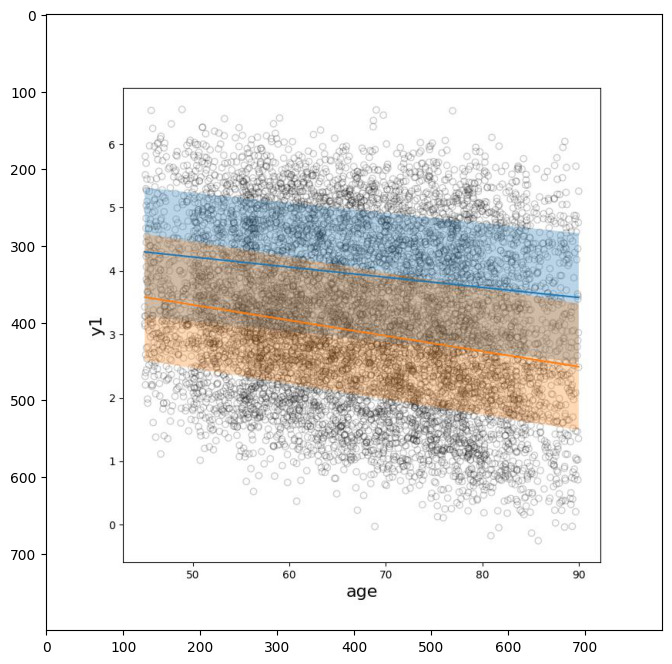
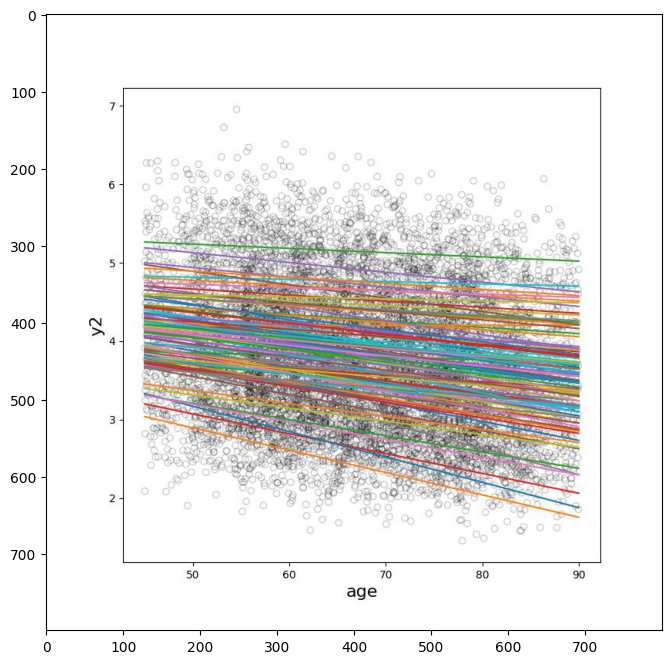
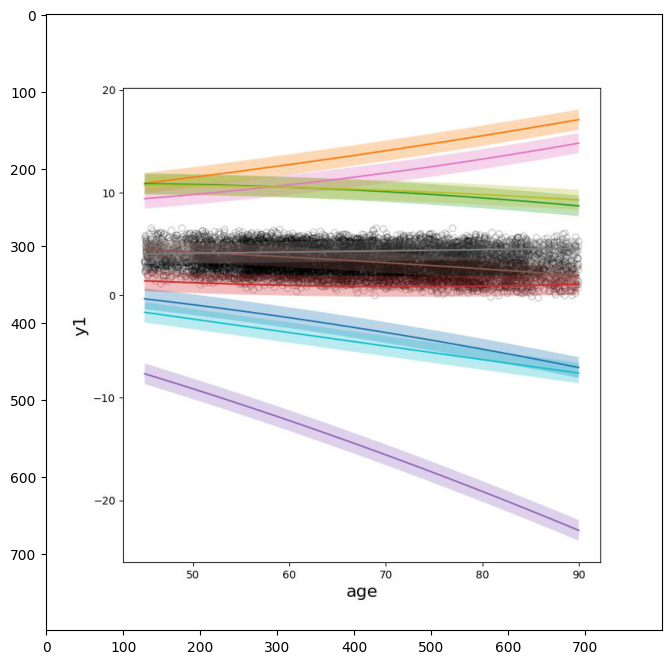
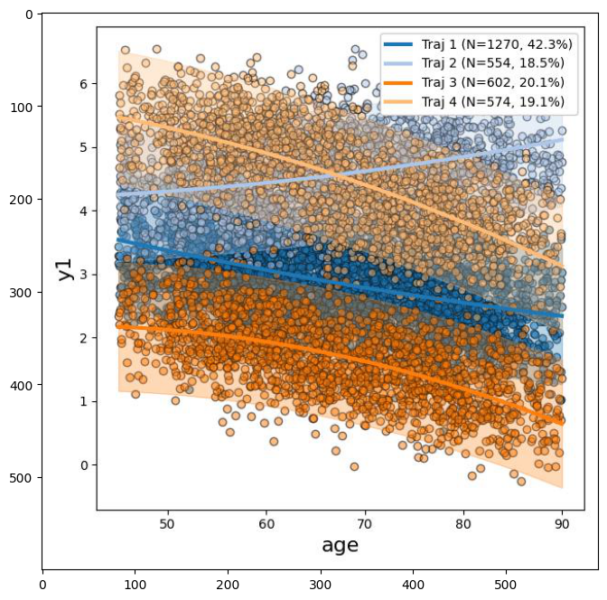
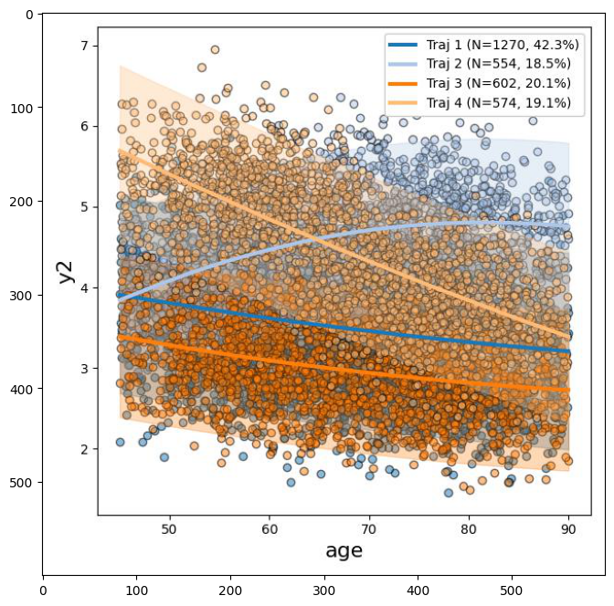

Introduction
This tutorial demonstrates the basic procedure for performing Bayesian trajectory modeling using the bayes_traj python package. No knowledge of the python programming language is required.
Data Preliminaries
General comments about input data
- Tools expect data to be in csv (comma-separated value) format
- If an intercept term will be used as a predictor, the data set should contain a column of 1s
- There should be a subject identifier column (not strictly necessary, e.g. if your data is cross-sectional)
- bayes_traj uses '^' to indicate a predictor is being raised to a power and '*' to indicate an interaction between two predictors.
Tutorial data description
We begin by reading in a synthetically generated data set that mimics biomarkers (y1 and y2) that decline with age. There are five trajectory subgroups in our data set: three with modest rates of decline but with varying intercepts, and two with accelerated rates of decline (also with varying intercepts). There are three visits for each individual in our data set, simulating a longitudinal study. The visits are spread 5 years apart. Subject "enrollment" is 45 - 80 years old.
| id | intercept | age | age^2 | y1 | y2 | |
|---|---|---|---|---|---|---|
| 0 | 1 | 1.0 | 68.2 | 4650.3 | 4.9 | 5.0 |
| 1 | 1 | 1.0 | 73.2 | 5357.2 | 5.0 | 4.9 |
| 2 | 1 | 1.0 | 78.2 | 6114.2 | 4.7 | 4.8 |
| 3 | 2 | 1.0 | 54.1 | 2931.0 | 5.3 | 5.2 |
| 4 | 2 | 1.0 | 59.1 | 3497.4 | 5.2 | 5.1 |
| 5 | 2 | 1.0 | 64.1 | 4113.7 | 5.0 | 5.1 |
| 6 | 3 | 1.0 | 58.3 | 3396.8 | 5.2 | 5.1 |
| 7 | 3 | 1.0 | 63.3 | 4004.7 | 5.0 | 5.0 |
| 8 | 3 | 1.0 | 68.3 | 4662.5 | 5.1 | 4.9 |
| 9 | 4 | 1.0 | 59.8 | 3575.5 | 5.1 | 5.0 |
Let's now visualize the data:
This is a highly idealized data set. Working with such a data set initially has two purposes: 1) it makes clear what we are trying to achieve with trajectory analysis (namely, to identify subgroups and their characteristic progression patterns), and 2) it provides a "sanity check" that ensures the Bayesian trajectory tools produce the results we expect. We will explore more challenging data later in the tutorial.
Generating Priors
Before we can perform Bayesian trajectory fitting to our data, we must first generate priors for the parameters in our model. The bayes_traj package provides two utilities for generating priors: generate_prior and viz_data_prior_draws. We can inspect tool usage by running each with the -h flag:
> generate_prior -h
usage: generate_prior [-h] [--preds PREDS] [--targets TARGETS]
[--out_file OUT_FILE]
[--tar_resid TAR_RESID [TAR_RESID ...]]
[--coef COEF [COEF ...]]
[--coef_std COEF_STD [COEF_STD ...]] [--in_data IN_DATA]
[--ranefs RANEFS] [--ranef RANEF [RANEF ...]]
[--est_ranefs] [--num_trajs NUM_TRAJS] [--model MODEL]
[--model_trajs MODEL_TRAJS] [--groupby <string>]
[--alpha <class 'float'>]
Generates a pickled file containing Bayesian trajectory prior information
options:
-h, --help show this help message and exit
--preds PREDS Comma-separated list of predictor names
--targets TARGETS Comma-separated list of target names
--out_file OUT_FILE Output (pickle) file that will contain the prior
--tar_resid TAR_RESID [TAR_RESID ...]
Use this flag to specify the residual precision mean
and variance for the corresponding target value.
Specify as a comma-separated tuple:
target_name,mean,var. Note that precision is the
inverse of the variance. Only applies to continuous
targets
--coef COEF [COEF ...]
Coefficient prior for a specified target and
predictor. Specify as a comma-separated tuple:
target_name,predictor_name,mean,std
--coef_std COEF_STD [COEF_STD ...]
Coefficient prior standard deviation for a specified
target and predictor. Specify as a comma-separated
tuple: target_name,predictor_name,std
--in_data IN_DATA If a data file is specified, it will be read in and
used to set reasonable prior values using regression.
It is assumed that the file contains data columns with
names corresponding to the predictor and target names
specified on the command line.
--ranefs RANEFS Comma-separated list of predictors for which to
consider random effects (must be a subset of preds)
--ranef RANEF [RANEF ...]
Variance or covariance prior for specified random
effect. Specify as a comma-separated tuple:
target_name,predictor_name,variance or
target,predictor_name1, predictor_name2,covariance. By
default, variances will be 1 and covariances will be
0.
--est_ranefs This flag will estimate the random effect covariance
matrix from the input data or model. Note that this
procedure may take several minutes. If random effects
are not specified (using the --ranefs flag) this flag
will have no effect. Note that by default, random
effect covariance matrices will be set to the identify
matrix.
--num_trajs NUM_TRAJS
Estimate of the number of trajectories expected in the
data set. Can be specified as a single value or as a
dash-separated range, such as 4-6. If a single value
is specified, a range will be assumed to be 1 to
(2*num_trajs-1)
--model MODEL Pickled bayes_traj model that has been fit to data and
from which information will be extracted to produce an
updated prior file
--model_trajs MODEL_TRAJS
Comma-separated list of integers indicating which
trajectories to use from the specified model. If a
model is not specified, the values specified with this
flag will be ignored. If a model is specified, and
specific trajectories are not specified with this
flag, then all trajectories will be used to inform the
prior
--groupby <string> Column name in input data file indicating those data
instances that must be in the same trajectory. This is
typically a subject identifier (e.g. in the case of a
longitudinal data set).
--alpha <class 'float'>
Dirichlet process scaling parameter. Higher values
indicate belief that more trajectoreis are present.
Must be a positive real value if specified.
This utility can be used in a number of ways. If you have no prior knowledge about how to set values for the prior, you may wish to start by running the utility with very basic information, which can later be fine-tuned. (Note that by default, the generated prior assumes no random effects).
Let's run this utility with some basic information: the target variable we wish to analyze (y1), the predictors we wish to use (intercert and age), and our data file.
> generate_prior --num_trajs 5 --preds intercept,age --targets y1 --in_data bayes_traj_tutorial_std-0.05_visits-3.csv --out_file bayes_traj_tutorial_std-0.05_visits-3_prior_v1.p --groupby id
Reading data...
---------- Prior Info ----------
alpha: 5.92e-01
y1 residual (precision mean, precision variance): (3.75e+00, 8.35e-02)
y1 intercept (mean, std): (5.10e+00, 5.03e-01)
y1 age (mean, std): (-2.74e-02, 7.46e-03)
By default, this utility makes a crude estimate of prior parameters.
The print-out provides information about how the prior has been set. The first value, 'alpha', captures our prior belief about how many trajectories are likely to exist in our data set. This value is determined by the number specified using the --num_trajs flag. Higher alpha values indicate more trajectories are likely to be in the data and vice versa (this value is always greater than zero). Note that the actual number of trajectories will be determined during the data fitting process; the specified number of trajectories only represents an expectation.
Next is the prior for the residual precision (1/variance). Following this are priors for the trajectory predictor coefficients.
Is this a good prior? Does it reflect our believe about trajectories that may be in our data? This can be difficult to assess with a numerical description. For a more visual assesment, we can use the 'viz_data_prior_draws' to produce random draws from this prior and overlay these with our data. Let's first look at usage by running with the -h flag:
> viz_data_prior_draws -h
usage: viz_data_prior_draws [-h] [--data_file DATA_FILE] [--prior PRIOR]
[--num_draws NUM_DRAWS] [--y_axis Y_AXIS]
[--y_label Y_LABEL] [--x_axis X_AXIS]
[--x_label X_LABEL] [--ylim YLIM] [--hide_resid]
[--fig_file FIG_FILE]
Produces a scatter plot of the data contained in the input data file as well
as plots of random draws from the prior. This is useful to inspect whether the
prior appropriately captures prior belief.
options:
-h, --help show this help message and exit
--data_file DATA_FILE
Input data file
--prior PRIOR Input prior file
--num_draws NUM_DRAWS
Number of random draws to take from prior
--y_axis Y_AXIS Name of the target variable that will be plotted on
the y-axis
--y_label Y_LABEL Label to display on y-axis. If none given, the
variable name specified with the y_axis flag will be
used.
--x_axis X_AXIS Name of the predictor variable that will be plotted on
the x-axis
--x_label X_LABEL Label to display on x-axis. If none given, the
variable name specified with the x_axis flag will be
used.
--ylim YLIM Comma-separated tuple to set the limits of display for
the y-axis
--hide_resid If set, shaded regions corresponding to residual
spread will not be displayed. This can be useful to
reduce visual clutter. Only relevant for continuous
target variables.
--fig_file FIG_FILE File name where figure will be saved
> viz_data_prior_draws --data_file bayes_traj_tutorial_std-0.05_visits-3.csv --prior bayes_traj_tutorial_std-0.05_visits-3_prior_v1.p --num_draws 2 --x_axis age --y_axis y1 --fig_file bayes_traj_tutorial_std-0.05_visits-3_prior_v1_draws.jpg

Shown are two random draw from our prior over trajectories. The solid, colored lines represent the mean trend of randomly selected trajectories, and the shaded regions reflect the prior belief about the residual spread around each trajectory.
There are some issues with this first-pass prior: the prior for residual variances (shaded regions), is much too large. Also, the variability in intercepts does not appear to be high enough to adequately represent our data.
Let's rerun generate_prior, but this time will specify a higher residual precision (i.e., lower residual standard deviation value). Because we are dealing with a synthetically generated data set, we know a priori what the residual standard deviation is for each trajectory (we set it when we created the data!). In practice, you will need to use trial-and-error to select a value that best captures your belief.
We will use the --tar_resid flag to over-ride the default residual prior settings:
> generate_prior --num_trajs 5 --preds intercept,age --targets y1 --in_data bayes_traj_tutorial_std-0.05_visits-3.csv --out_file bayes_traj_tutorial_std-0.05_visits-3_prior_v2.p --groupby id --tar_resid y1,400,1e-5
Reading data...
---------- Prior Info ----------
alpha: 5.92e-01
y1 residual (precision mean, precision variance): (4.00e+02, 1.00e-05)
y1 intercept (mean, std): (5.10e+00, 5.03e-01)
y1 age (mean, std): (-2.74e-02, 7.46e-03)
As before, let's visualize some random draws from this prior to see how things look:
> viz_data_prior_draws --data_file bayes_traj_tutorial_std-0.05_visits-3.csv --prior bayes_traj_tutorial_std-0.05_visits-3_prior_v2.p --num_draws 20 --x_axis age --y_axis y1 --fig_file bayes_traj_tutorial_std-0.05_visits-3_prior_v2_draws.jpg

Now our prior over the residual variance seems reasonable. We can further improve the prior by overriding the settings for the intercept using the --coef_std flag. Let's see how this works:
> generate_prior --num_trajs 5 --preds intercept,age --targets y1 --in_data bayes_traj_tutorial_std-0.05_visits-3.csv --out_file bayes_traj_tutorial_std-0.05_visits-3_prior_v3.p --groupby id --tar_resid y1,400,1e-5 --coef_std y1,intercept,1
Reading data...
---------- Prior Info ----------
alpha: 5.92e-01
y1 residual (precision mean, precision variance): (4.00e+02, 1.00e-05)
y1 intercept (mean, std): (5.10e+00, 1.00e+00)
y1 age (mean, std): (-2.74e-02, 7.46e-03)
Now our prior over the intercept has been adjusted from a Gaussian distribution with a mean of 5.1 and a standard deviation of 0.074 to a mean of 5.1 and standard deviation of 1. Let's again look at some draws from the prior:
> viz_data_prior_draws --data_file bayes_traj_tutorial_std-0.05_visits-3.csv --prior bayes_traj_tutorial_std-0.05_visits-3_prior_v3.p --num_draws 100 --hide_resid --x_axis age --y_axis y1 --fig_file bayes_traj_tutorial_std-0.05_visits-3_prior_v3_draws.jpg
The increased variance for the intercept coefficient now better captures what we observe in our data. We could further tweak the prior by adjusting the coefficient for 'age' (i.e. the slope), but the trajectory subgroups are so well delineated in this idealized data set, the fitting routine should have no problem with this prior.
Now that we have a reasonable prior, we can proceed with the actual Bayesian trajectory fitting and analysis.
Bayesian Trajectory Analysis: Continuous Target Variables
Now that we have generated a prior for our data set, we are ready to perform Bayesian trajectory fitting. First we demonstrate trajectory analysis in the case of continuous target variables. In this case, the algorithm assumes that the residuals around each trajectory are normally distributed.
bayes_traj_main
The fitting routine is invoked with the bayes_traj_main utility. Let's run it with the -h flag to see what inputs are required:
> bayes_traj_main -h
usage: bayes_traj_main [-h] --in_csv <string> --targets <string>
[--groupby <string>] [--out_csv <string>] --prior
<string> [--prec_prior_weight <float>]
[--alpha <class 'float'>] [--out_model <string>]
[--iters <int>] [--repeats <int>] [-k <int>]
[--prob_thresh <float>] [--num_init_trajs <int>]
[--verbose] [--probs_weight <float>] [--weights_only]
Runs Bayesian trajectory analysis on the specified data file with the
specified predictors and target variables
options:
-h, --help show this help message and exit
--in_csv <string> Input csv file containing data on which to run
Bayesian trajectory analysis
--targets <string> Comma-separated list of target names. Must appear as
column names of the input data file.
instances that must be in the same trajectory. This is
typically a subject identifier (e.g. in the case of a
longitudinal data set).
--out_csv <string> If specified, an output csv file will be generated
that contains the contents of the input csv file, but
with additional columns indicating trajectory
assignment information for each data instance. There
will be a column called traj with an integer value
indicating the most probable trajectory assignment.
There will also be columns prefixed with traj_ and
then a trajectory-identifying integer. The values of
these columns indicate the probability that the data
instance belongs to each of the corresponding
trajectories.
--prior <string> Input pickle file containing prior settings
--prec_prior_weight <float>
Positive, floating point value indicating how much
weight to put on the prior over the residual
precisions. Values greater than 1 give more weight to
the prior. Values less than one give less weight to
the prior.
--alpha <class 'float'>
If specified, over-rides the value in the prior file
--out_model <string> Pickle file name. If specified, the model object will
be written to this file.
--iters <int> Number of inference iterations
--repeats <int> Number of repeats to attempt. If a value greater than
1 is specified, the WAIC2 fit criterion will be
computed at the end of each repeat. If, for a given
repeat, the WAIC2 score is lower than the lowest score
seen at that point, the model will be saved to file.
-k <int> Number of columns in the truncated assignment matrix
--prob_thresh <float>
If during data fitting the probability of a data
instance belonging to a given trajectory drops below
this threshold, then the probabality of that data
instance belonging to the trajectory will be set to 0
--num_init_trajs <int>
If specified, the initialization procedure will
attempt to ensure that the number of initial
trajectories in the fitting routine equals the
specified number.
--verbose Display per-trajectory counts during optimization
--probs_weight <float>
Value between 0 and 1 that controls how much weight to
observing each trajectory. This value is only
meaningful if traj_probs has been set in the input
prior file. Otherwise, it has no effect. Higher values
place more weight on the model-derived probabilities
and reflect a stronger belief in those assignment
probabilities.
--weights_only Setting this flag will force the fitting routine to
only optimize the trajectory weights. The assumption
is that the specified prior file contains previously
modeled trajectory information, and that those
trajectories should be used for the current fit. This
option can be useful if a model learned from one
cohort is applied to another cohort, where it is
possible that the relative proportions of different
trajectory subgroups differs. By using this flag, the
proportions of previously determined trajectory
subgroups will be determined for the current data set.
We will run the fitting routine by specifying our data set, the prior we generated, and the targets and predictors we are interested in analyzing. Also, it is important to use the groupby flag to indicate the column name in your data set that contains the subject identifier information.
> bayes_traj_main --in_csv bayes_traj_tutorial_std-0.05_visits-3.csv --prior bayes_traj_tutorial_std-0.05_visits-3_prior_v3.p --targets y1 --groupby id --iters 150 --verbose --out_model bayes_traj_tutorial_std-0.05_visits-3_model_v1.p --num_init_trajs 5
Reading prior...
Reading data...
Fitting...
Initializing parameters...
iter 1, [4291.2 118.4 194.1 0. 70. 4326.2 0. 0. 0. 0. 0. 0. 0. 0. 0. 0. 0. 0. 0. 0. 0. 0. 0. 0. 0. 0. 0. 0. 0. 0. ]
iter 2, [2354.6 303.2 122.7 0. 4046.7 2172.7 0. 0. 0. 0. 0. 0. 0. 0. 0. 0. 0. 0. 0. 0. 0. 0. 0. 0. 0. 0. 0. 0. 0. 0. ]
iter 3, [ 580. 1873.5 45.1 0. 3468.5 3032.8 0. 0. 0. 0. 0. 0. 0. 0. 0. 0. 0. 0. 0. 0. 0. 0. 0. 0. 0. 0. 0. 0. 0. 0. ]
iter 4, [1265.5 2778.6 318.6 0. 2302.8 2334.5 0. 0. 0. 0. 0. 0. 0. 0. 0. 0. 0. 0. 0. 0. 0. 0. 0. 0. 0. 0. 0. 0. 0. 0. ]
iter 5, [1794.1 2847. 758.9 0. 1800. 1800. 0. 0. 0. 0. 0. 0. 0. 0. 0. 0. 0. 0. 0. 0. 0. 0. 0. 0. 0. 0. 0. 0. 0. 0. ]
iter 6, [1759. 2509.2 1131.8 0. 1800. 1800. 0. 0. 0. 0. 0. 0. 0. 0. 0. 0. 0. 0. 0. 0. 0. 0. 0. 0. 0. 0. 0. 0. 0. 0. ]
iter 7, [1794. 2370.4 1235.6 0. 1800. 1800. 0. 0. 0. 0. 0. 0. 0. 0. 0. 0. 0. 0. 0. 0. 0. 0. 0. 0. 0. 0. 0. 0. 0. 0. ]
iter 8, [1796.9 2286.3 1316.8 0. 1800. 1800. 0. 0. 0. 0. 0. 0. 0. 0. 0. 0. 0. 0. 0. 0. 0. 0. 0. 0. 0. 0. 0. 0. 0. 0. ]
iter 9, [1800. 2253.9 1346.1 0. 1800. 1800. 0. 0. 0. 0. 0. 0. 0. 0. 0. 0. 0. 0. 0. 0. 0. 0. 0. 0. 0. 0. 0. 0. 0. 0. ]
iter 10, [1800. 2233.6 1366.4 0. 1800. 1800. 0. 0. 0. 0. 0. 0. 0. 0. 0. 0. 0. 0. 0. 0. 0. 0. 0. 0. 0. 0. 0. 0. 0. 0. ]
...
iter 145, [1800. 1799.3 1800.7 0. 1800. 1800. 0. 0. 0. 0. 0. 0. 0. 0. 0. 0. 0. 0. 0. 0. 0. 0. 0. 0. 0. 0. 0. 0. 0. 0. ]
iter 146, [1800. 1799. 1801. 0. 1800. 1800. 0. 0. 0. 0. 0. 0. 0. 0. 0. 0. 0. 0. 0. 0. 0. 0. 0. 0. 0. 0. 0. 0. 0. 0.]
iter 147, [1800. 1798.7 1801.3 0. 1800. 1800. 0. 0. 0. 0. 0. 0. 0. 0. 0. 0. 0. 0. 0. 0. 0. 0. 0. 0. 0. 0. 0. 0. 0. 0. ]
iter 148, [1800. 1798.5 1801.5 0. 1800. 1800. 0. 0. 0. 0. 0. 0. 0. 0. 0. 0. 0. 0. 0. 0. 0. 0. 0. 0. 0. 0. 0. 0. 0. 0. ]
iter 149, [1800. 1798.2 1801.8 0. 1800. 1800. 0. 0. 0. 0. 0. 0. 0. 0. 0. 0. 0. 0. 0. 0. 0. 0. 0. 0. 0. 0. 0. 0. 0. 0. ]
iter 150, [1800. 1798. 1802. 0. 1800. 1800. 0. 0. 0. 0. 0. 0. 0. 0. 0. 0. 0. 0. 0. 0. 0. 0. 0. 0. 0. 0. 0. 0. 0. 0.]
Saving model...
Saving model provenance info...
Note that since we ran with the --verbose flag, the fitting routine prints a count corresponding to how many data instances are assigned to each trajectory, where each column corresponds to a trajectory. This is handy as it allows us to evaluate convergence of the algorithm: we should begin to see little or no change with respect to how many data instances are assigned to each trajectory, as we do here over the last few iterations. Note also that many columns are 0 or may reduce to 0. This is because the Bayesian non-parametric mechanism permits an infinite number of possible trajectories (approximated by a large, finite number in practice) and then adjusts the number of trajectories to explain the data.
viz_model_trajs
Now that we have saved the model to file, we can use another utility, viz_model_trajs, to visually inspect the results. First run with the -h flag to see the inputs:
> viz_model_trajs -h
usage: viz_model_trajs [-h] --model MODEL --y_axis Y_AXIS [--y_label Y_LABEL]
--x_axis X_AXIS [--x_label X_LABEL] [--trajs TRAJS]
[--min_traj_prob MIN_TRAJ_PROB]
[--max_traj_prob MAX_TRAJ_PROB] [--fig_file FIG_FILE]
[--traj_map TRAJ_MAP] [--xlim XLIM] [--ylim YLIM]
[--hs] [--htd] [--traj_markers TRAJ_MARKERS]
[--traj_colors TRAJ_COLORS] [--fill_alpha FILL_ALPHA]
options:
-h, --help show this help message and exit
--model MODEL Model containing trajectories to visualize
--y_axis Y_AXIS Name of the target variable that will be plotted on
the y-axis
--y_label Y_LABEL Label to display on y-axis. If none given, the
variable name specified with the y_axis flag will be
used.
--x_axis X_AXIS Name of the predictor variable that will be plotted on
the x-axis
--x_label X_LABEL Label to display on x-axis. If none given, the
variable name specified with the x_axis flag will be
used.
--trajs TRAJS Comma-separated list of trajectories to plot. If none
specified, all trajectories will be plotted.
--min_traj_prob MIN_TRAJ_PROB
The probability of a given trajectory must be at least
this value in order to be rendered. Value should be
between 0 and 1 inclusive.
--max_traj_prob MAX_TRAJ_PROB
The probability of a given trajectory can not be
larger than this value in order to be rendered. Value
should be between 0 and 1 inclusive.
--fig_file FIG_FILE If specified, will save the figure to file.
--traj_map TRAJ_MAP The default trajectory numbering scheme is somewhat
arbitrary. Use this flag to provide a mapping between
the defualt trajectory numbers and a desired numbering
scheme. Provide as a comma-separated list of
hyphenated mappings. E.g.: 3-1,18-2,7-3 would indicate
a mapping from 3 to 1, from 18 to 2, and from 7 to 3.
Only the default trajectories in the mapping will be
plotted. If this flag is specified, it will override
--trajs
--xlim XLIM Comma-separated tuple to set the limits of display for
the x-axis
--ylim YLIM Comma-separated tuple to set the limits of display for
the y-axis
--hs This flag will hide the data scatter plot
--htd This flag will hide trajectory legend details (can
reduce clutter)
--traj_markers TRAJ_MARKERS
Comma-separated list of markers to use for each
trajectory. The number of markers should match the
number of trajectories to renders. See matplotlib
documentation for marker options
--traj_colors TRAJ_COLORS
Comma-separated list of colors to use for each
trajectory. The number of colors should match the
number of trajectories to renders. See matplotlib
documentation for color options
--fill_alpha FILL_ALPHA
Value between 0 and 1 that controls opacity of each
trajectorys fill region (which indicates +\- 2
residual standard deviations about the mean)
> viz_model_trajs --model bayes_traj_tutorial_std-0.05_visits-3_model_v1.p --x_axis age --y_axis y1 --fig_file bayes_traj_tutorial_std-0.05_visits-3_model_v1_fig.jpg
Shown are the average trends (solid lines) identified by the algorithm together with shaded regions indicating the estimated residual precision values. Data points are color-coded based on which trajectory groub they most probably belong to.
Trajectory Modeling with Noisy, Continuous Data
Now that we have generated a trajectory model that we are happy with, we may wish to use this model to inform trajectory analysis in another data set. In this section we will analyze a much noisier data set than above. We will begin by plotting this data set.
This is also a synthetically generated data set, and -- except for the noise level -- has the same characteristics as the data set we worked with above (e.g. five trajectories, three "visits" per "individual" and so on). As before we start with a prior.
generate_prior: new data
There is no reason why we couldn't use our previously generated prior straight-away to perform trajectory analysis in this data set. However, the data fitting we performed above has presumably refined our knowledge about the trajectories we are likely to encounter in this new data set. As such, we can provide the previously fit model as an input to generate_prior so that it can inform the generation of a new prior for our current data set (effectively, we are using the posterior of our previously fit model to inform the prior for our current data).
Let's see how this works:
> generate_prior --preds intercept,age --targets y1 --out_file bayes_traj_tutorial_std-0.5_visits-3_prior_v1.p --model bayes_traj_tutorial_std-0.05_visits-3_model_v1.p
Reading model...
---------- Prior Info ----------
alpha: 5.92e-01
y1 residual (precision mean, precision variance): (4.00e+02, 5.95e-13)
y1 intercept (mean, std): (4.81e+00, 4.73e-01)
y1 age (mean, std): (-2.31e-02, 4.65e-03)
As before, let's visualize some random draws from this prior to see how the look with respect to our new data:
> viz_data_prior_draws --data_file bayes_traj_tutorial_std-0.5_visits-3.csv --prior bayes_traj_tutorial_std-0.5_visits-3_prior_v1.p --num_draws 20 --x_axis age --y_axis y1 --fig_file bayes_traj_tutorial_std-0.5_visits-3_prior_v1_draws.jpg

There are a few points to note: * We did not explicitly define settings for the intercept or residual priors. These were gleamed from the input model. * The spread in intercept and slope appear reasonable. * The residual precision (1/variance) is apparently too high for this data.
Given that the characteristics of our new data may be significantly different than the characteristics of the data on which the previous model was fit, we always have the option to specifically indicate what the varios prior settings should be. For example, here we have good reason to believe that the residual precision should be lower. As such, we can re-generate the prior and specifically set the residual precsion:
> generate_prior --preds intercept,age --targets y1 --out_file bayes_traj_tutorial_std-0.5_visits-3_prior_v2.p --model bayes_traj_tutorial_std-0.05_visits-3_model_v1.p --groupby id --tar_resid y1,4,0.01
Reading model...
---------- Prior Info ----------
alpha: 5.92e-01
y1 residual (precision mean, precision variance): (4.00e+00, 1.00e-02)
y1 intercept (mean, std): (4.81e+00, 4.73e-01)
y1 age (mean, std): (-2.31e-02, 4.65e-03)
Again, visualize random draws from this prior to evaluate these settings:
> viz_data_prior_draws --data_file bayes_traj_tutorial_std-0.5_visits-3.csv --prior bayes_traj_tutorial_std-0.5_visits-3_prior_v2.p --num_draws 2 --x_axis age --y_axis y1 --fig_file bayes_traj_tutorial_std-0.5_visits-3_prior_v2_draws.jpg

Looks reasonable. Now let's see how well the trajectory fitting routine works on this data set with this prior...
bayes_traj_main: new data
Bayesian trajectory fitting proceeds exactly as before with the exception that we now set the --probs_weight flag. Since the prior was generated from a previously fit model, the prior file contains the trajectory shapes as well as the trajectory proportions from that data fit. When we use this prior on a new data set, we can tell bayes_traj_main how much weight to give to those previously determined trajectories on initialization; the fitting routine will then refine trajectory shapes and proportions using the data provided.
> bayes_traj_main --in_csv bayes_traj_tutorial_std-0.5_visits-3.csv --prior bayes_traj_tutorial_std-0.5_visits-3_prior_v2.p --targets y1 --groupby id --iters 150 --verbose --out_model bayes_traj_tutorial_std-0.5_visits-3_model_v1.p --probs_weight 1
Reading prior...
Using K=30 (from prior)
Reading data...
Fitting...
Initializing parameters...
iter 1, [1761.6 1860.4 1752.9 0. 1858.5 1766.6 0. 0. 0. 0. 0. 0. 0. 0. 0. 0. 0. 0. 0. 0. 0. 0. 0. 0. 0. 0. 0. 0. 0. 0. ]
iter 2, [1675.2 1993.6 1643.1 0. 1986.7 1701.4 0. 0. 0. 0. 0. 0. 0. 0. 0. 0. 0. 0. 0. 0. 0. 0. 0. 0. 0. 0. 0. 0. 0. 0. ]
iter 3, [1525.8 2189.7 1388. 0. 2172. 1724.6 0. 0. 0. 0. 0. 0. 0. 0. 0. 0. 0. 0. 0. 0. 0. 0. 0. 0. 0. 0. 0. 0. 0. 0. ]
iter 4, [1197. 2417.7 955.1 0. 2387.5 2042.7 0. 0. 0. 0. 0. 0. 0. 0. 0. 0. 0. 0. 0. 0. 0. 0. 0. 0. 0. 0. 0. 0. 0. 0. ]
iter 5, [ 898.2 2469.6 1148. 0. 2425. 2059.3 0. 0. 0. 0. 0. 0. 0. 0. 0. 0. 0. 0. 0. 0. 0. 0. 0. 0. 0. 0. 0. 0. 0. 0. ]
iter 6, [ 945.5 2378.8 1416.1 0. 2296.4 1963.3 0. 0. 0. 0. 0. 0. 0. 0. 0. 0. 0. 0. 0. 0. 0. 0. 0. 0. 0. 0. 0. 0. 0. 0. ]
iter 7, [1089.4 2287.3 1620.5 0. 2109. 1893.8 0. 0. 0. 0. 0. 0. 0. 0. 0. 0. 0. 0. 0. 0. 0. 0. 0. 0. 0. 0. 0. 0. 0. 0. ]
iter 8, [1251.4 2216.8 1802. 0. 1882. 1847.8 0. 0. 0. 0. 0. 0. 0. 0. 0. 0. 0. 0. 0. 0. 0. 0. 0. 0. 0. 0. 0. 0. 0. 0. ]
iter 9, [1409. 2087.4 1884.4 0. 1802.6 1816.5 0. 0. 0. 0. 0. 0. 0. 0. 0. 0. 0. 0. 0. 0. 0. 0. 0. 0. 0. 0. 0. 0. 0. 0. ]
iter 10, [1535.7 1948.5 1797.9 0. 1918.3 1799.5 0. 0. 0. 0. 0. 0. 0. 0. 0. 0. 0. 0. 0. 0. 0. 0. 0. 0. 0. 0. 0. 0. 0. 0. ]
...
iter 141, [1815.8 1791.1 1857.5 0. 1707.2 1828.4 0. 0. 0. 0. 0. 0. 0. 0. 0. 0. 0. 0. 0. 0. 0. 0. 0. 0. 0. 0. 0. 0. 0. 0. ]
iter 142, [1815.7 1791. 1857.7 0. 1707.2 1828.4 0. 0. 0. 0. 0. 0. 0. 0. 0. 0. 0. 0. 0. 0. 0. 0. 0. 0. 0. 0. 0. 0. 0. 0. ]
iter 143, [1815.6 1791. 1857.8 0. 1707.3 1828.3 0. 0. 0. 0. 0. 0. 0. 0. 0. 0. 0. 0. 0. 0. 0. 0. 0. 0. 0. 0. 0. 0. 0. 0. ]
iter 144, [1815.6 1790.9 1857.9 0. 1707.3 1828.3 0. 0. 0. 0. 0. 0. 0. 0. 0. 0. 0. 0. 0. 0. 0. 0. 0. 0. 0. 0. 0. 0. 0. 0. ]
iter 145, [1815.5 1790.8 1858.1 0. 1707.3 1828.3 0. 0. 0. 0. 0. 0. 0. 0. 0. 0. 0. 0. 0. 0. 0. 0. 0. 0. 0. 0. 0. 0. 0. 0. ]
iter 146, [1815.4 1790.8 1858.2 0. 1707.3 1828.3 0. 0. 0. 0. 0. 0. 0. 0. 0. 0. 0. 0. 0. 0. 0. 0. 0. 0. 0. 0. 0. 0. 0. 0. ]
iter 147, [1815.4 1790.7 1858.3 0. 1707.3 1828.3 0. 0. 0. 0. 0. 0. 0. 0. 0. 0. 0. 0. 0. 0. 0. 0. 0. 0. 0. 0. 0. 0. 0. 0. ]
iter 148, [1815.3 1790.6 1858.4 0. 1707.4 1828.3 0. 0. 0. 0. 0. 0. 0. 0. 0. 0. 0. 0. 0. 0. 0. 0. 0. 0. 0. 0. 0. 0. 0. 0. ]
iter 149, [1815.3 1790.6 1858.5 0. 1707.4 1828.2 0. 0. 0. 0. 0. 0. 0. 0. 0. 0. 0. 0. 0. 0. 0. 0. 0. 0. 0. 0. 0. 0. 0. 0. ]
iter 150, [1815.2 1790.5 1858.7 0. 1707.4 1828.2 0. 0. 0. 0. 0. 0. 0. 0. 0. 0. 0. 0. 0. 0. 0. 0. 0. 0. 0. 0. 0. 0. 0. 0. ]
Saving model...
Saving model provenance info...
DONE.
As before, let's visualize the trajectories:
> viz_model_trajs --model bayes_traj_tutorial_std-0.5_visits-3_model_v1.p --x_axis age --y_axis y1 --fig_file bayes_traj_tutorial_std-0.5_visits-3_model_v1_fig.jpg
This is a challenging data set. Although this data set was created with 5 different trajectories, the noise level is high, making it challenging to identify them. Here we benefited from a prior informed by a previously fit model.
New data, multiple dimensions
Instead of performing trajectory analysis on a single target variable (e.g. y1), we can identify trajectory subgroups by considering progression patterns in multiple dimensions, here y1 and y2.
Let's begin by plotting both y1 and y2 vs age for our new data set.
As before, we begin by generating a prior.
generate_prior: new data, multiple dimensions
We will use our previously generated model as before. Recall that we specifically set the prior over the y1 residual precision. Given that y2 visually appears to have similar data characteristics, a reasonable place to start is to specify the same prior for the y2 residuals.
> generate_prior --in_data bayes_traj_tutorial_std-0.5_visits-3.csv --preds intercept,age --targets y1,y2 --groupby id --out_file bayes_traj_tutorial_std-0.5_visits-3_prior_v3.p --tar_resid y1,4,0.01 --tar_resid y2,4,0.01
Reading data...
---------- Prior Info ----------
alpha: 3.31e-01
y1 residual (precision mean, precision variance): (4.00e+00, 1.00e-02)
y1 intercept (mean, std): (4.92e+00, 5.49e-01)
y1 age (mean, std): (-2.47e-02, 8.20e-03)
y2 residual (precision mean, precision variance): (4.00e+00, 1.00e-02)
y2 intercept (mean, std): (4.84e+00, 3.93e-01)
y2 age (mean, std): (-1.56e-02, 5.76e-03)
Again, visualize random draws from our prior overlayed on our data. Now that we are considering multiple output dimensions, we should look at draws for both y1 and y2:
> viz_data_prior_draws --data_file bayes_traj_tutorial_std-0.5_visits-3.csv --prior bayes_traj_tutorial_std-0.5_visits-3_prior_v3.p --num_draws 100 --hide_resid --x_axis age --y_axis y1 --fig_file bayes_traj_tutorial_std-0.5_visits-3_prior_v3_y1_draws.jpg
> viz_data_prior_draws --data_file bayes_traj_tutorial_std-0.5_visits-3.csv --prior bayes_traj_tutorial_std-0.5_visits-3_prior_v3.p --num_draws 100 --x_axis age --y_axis y2 --hide_resid --fig_file bayes_traj_tutorial_std-0.5_visits-3_prior_v3_y2_draws.jpg

bayes_traj_main: new data, multiple dimensions
Trajectory fitting proceeds as before. We specify the newly generated prior and also indicate that we want trajectories defined with respect to y1 and y2.
> bayes_traj_main --in_csv bayes_traj_tutorial_std-0.5_visits-3.csv --prior bayes_traj_tutorial_std-0.5_visits-3_prior_v3.p --targets y1,y2 --groupby id --iters 150 --verbose --out_model bayes_traj_tutorial_std-0.5_visits-3_model_v2.p --num_init_trajs 5
Reading prior...
Reading data...
Fitting...
Initializing parameters...
iter 1, [8307.1 92. 545.1 22.3 33.5 0. 0. 0. 0. 0. 0. 0. 0. 0. 0. 0. 0. 0. 0. 0. 0. 0. 0. 0. 0. 0. 0. 0. 0. 0. ]
iter 2, [8202.1 109.2 639.8 19.6 29.3 0. 0. 0. 0. 0. 0. 0. 0. 0. 0. 0. 0. 0. 0. 0. 0. 0. 0. 0. 0. 0. 0. 0. 0. 0. ]
iter 3, [7943.6 147.8 866.7 16.3 25.6 0. 0. 0. 0. 0. 0. 0. 0. 0. 0. 0. 0. 0. 0. 0. 0. 0. 0. 0. 0. 0. 0. 0. 0. 0. ]
iter 4, [7450.7 226.9 1289.1 12.3 21. 0. 0. 0. 0. 0. 0. 0. 0. 0. 0. 0. 0. 0. 0. 0. 0. 0. 0. 0. 0. 0. 0. 0. 0. 0. ]
iter 5, [6877.4 347.6 1749. 9.7 16.3 0. 0. 0. 0. 0. 0. 0. 0. 0. 0. 0. 0. 0. 0. 0. 0. 0. 0. 0. 0. 0. 0. 0. 0. 0. ]
iter 6, [6237.1 479.2 2254.6 10.7 18.3 0. 0. 0. 0. 0. 0. 0. 0. 0. 0. 0. 0. 0. 0. 0. 0. 0. 0. 0. 0. 0. 0. 0. 0. 0. ]
iter 7, [5177.4 709.6 3051.7 20.7 40.7 0. 0. 0. 0. 0. 0. 0. 0. 0. 0. 0. 0. 0. 0. 0. 0. 0. 0. 0. 0. 0. 0. 0. 0. 0. ]
iter 8, [4408.2 1264.5 2898.7 134.8 293.8 0. 0. 0. 0. 0. 0. 0. 0. 0. 0. 0. 0. 0. 0. 0. 0. 0. 0. 0. 0. 0. 0. 0. 0. 0. ]
iter 9, [3679.9 1726.8 2369.3 402.4 821.7 0. 0. 0. 0. 0. 0. 0. 0. 0. 0. 0. 0. 0. 0. 0. 0. 0. 0. 0. 0. 0. 0. 0. 0. 0. ]
iter 10, [3440.7 1979.7 2024.7 534.6 1020.3 0. 0. 0. 0. 0. 0. 0. 0. 0. 0. 0. 0. 0. 0. 0. 0. 0. 0. 0. 0. 0. 0. 0. 0. 0. ]
...
iter 141, [1779.1 1817.2 1798.4 1830.9 1774.4 0. 0. 0. 0. 0. 0. 0. 0. 0. 0. 0. 0. 0. 0. 0. 0. 0. 0. 0. 0. 0. 0. 0. 0. 0. ]
iter 142, [1779.2 1817. 1798.4 1831. 1774.5 0. 0. 0. 0. 0. 0. 0. 0. 0. 0. 0. 0. 0. 0. 0. 0. 0. 0. 0. 0. 0. 0. 0. 0. 0. ]
iter 143, [1779.2 1816.9 1798.4 1831. 1774.5 0. 0. 0. 0. 0. 0. 0. 0. 0. 0. 0. 0. 0. 0. 0. 0. 0. 0. 0. 0. 0. 0. 0. 0. 0. ]
iter 144, [1779.2 1816.8 1798.4 1831. 1774.6 0. 0. 0. 0. 0. 0. 0. 0. 0. 0. 0. 0. 0. 0. 0. 0. 0. 0. 0. 0. 0. 0. 0. 0. 0. ]
iter 145, [1779.2 1816.7 1798.4 1831.1 1774.7 0. 0. 0. 0. 0. 0. 0. 0. 0. 0. 0. 0. 0. 0. 0. 0. 0. 0. 0. 0. 0. 0. 0. 0. 0. ]
iter 146, [1779.2 1816.6 1798.4 1831.1 1774.7 0. 0. 0. 0. 0. 0. 0. 0. 0. 0. 0. 0. 0. 0. 0. 0. 0. 0. 0. 0. 0. 0. 0. 0. 0. ]
iter 147, [1779.2 1816.5 1798.4 1831.1 1774.8 0. 0. 0. 0. 0. 0. 0. 0. 0. 0. 0. 0. 0. 0. 0. 0. 0. 0. 0. 0. 0. 0. 0. 0. 0. ]
iter 148, [1779.2 1816.4 1798.4 1831.1 1774.9 0. 0. 0. 0. 0. 0. 0. 0. 0. 0. 0. 0. 0. 0. 0. 0. 0. 0. 0. 0. 0. 0. 0. 0. 0. ]
iter 149, [1779.2 1816.4 1798.4 1831.2 1774.9 0. 0. 0. 0. 0. 0. 0. 0. 0. 0. 0. 0. 0. 0. 0. 0. 0. 0. 0. 0. 0. 0. 0. 0. 0. ]
iter 150, [1779.2 1816.3 1798.3 1831.2 1775. 0. 0. 0. 0. 0. 0. 0. 0. 0. 0. 0. 0. 0. 0. 0. 0. 0. 0. 0. 0. 0. 0. 0. 0. 0. ]
Saving model...
Saving model provenance info...
Plot the trajectories for both y1 and y2 to assess the fit:
> viz_model_trajs --model bayes_traj_tutorial_std-0.5_visits-3_model_v2.p --x_axis age --y_axis y1 --fig_file bayes_traj_tutorial_std-0.5_visits-3_model_v2_y1_fig.jpg
> viz_model_trajs --model bayes_traj_tutorial_std-0.5_visits-3_model_v2.p --x_axis age --y_axis y2 --fig_file bayes_traj_tutorial_std-0.5_visits-3_model_v2_y2_fig.jpg
The addition of y2 improves the ability of the trajectory algorithm to recover the underlying population structure.
Note that the fitting routine begins with a random initialization. For this particular data set and prior, multiple invocations of the fitting routine may result in different trajectory fit results. In practice, it is advised to generate multiple models for a given prior. Comparing these models both qualitatively and quantitatively can help identify spurious and stable trajectory subgroups.
Model Comparison
At this point, we may be wondering if we can produce a better fit using a different predictor set. For example, what if we include age^2 as an additional predictor?
The basic steps should now be familiar. Start by generating a prior:
generate_prior: new data, multiple dimensions, different predictors
> generate_prior --in_data bayes_traj_tutorial_std-0.5_visits-3.csv --preds intercept,age,age^2 --targets y1,y2 --out_file bayes_traj_tutorial_std-0.5_visits-3_prior_v4.p --tar_resid y1,4,0.01 --tar_resid y2,4,0.01
Reading data...
---------- Prior Info ----------
alpha: 2.91e-01
y1 residual (precision mean, precision variance): (4.00e+00, 1.00e-02)
y1 intercept (mean, std): (4.86e+00, 3.21e+00)
y1 age (mean, std): (-2.30e-02, 9.78e-02)
y1 age^2 (mean, std): (-1.25e-05, 7.31e-04)
y2 residual (precision mean, precision variance): (4.00e+00, 1.00e-02)
y2 intercept (mean, std): (4.91e+00, 2.29e+00)
y2 age (mean, std): (-1.77e-02, 6.90e-02)
y2 age^2 (mean, std): (1.59e-05, 5.10e-04)
> viz_data_prior_draws --data_file bayes_traj_tutorial_std-0.5_visits-3.csv --prior bayes_traj_tutorial_std-0.5_visits-3_prior_v4.p --num_draws 10 --x_axis age --y_axis y1 --fig_file bayes_traj_tutorial_std-0.5_visits-3_prior_v4_y1_draws.jpg

> viz_data_prior_draws --data_file bayes_traj_tutorial_std-0.5_visits-3.csv --prior bayes_traj_tutorial_std-0.5_visits-3_prior_v4.p --num_draws 5 --x_axis age --y_axis y2 --fig_file bayes_traj_tutorial_std-0.5_visits-3_prior_v4_y2_draws.jpg
We could further refine it as described above, but in the interest of demonstrating model comparison, it suffices.
bayes_traj_main: new data, multiple dimensions, different predictors
> bayes_traj_main --in_csv bayes_traj_tutorial_std-0.5_visits-3.csv --prior bayes_traj_tutorial_std-0.5_visits-3_prior_v4.p --targets y1,y2 --groupby id --iters 150 --verbose --out_model bayes_traj_tutorial_std-0.5_visits-3_model_v3.p --num_init_trajs 5
Reading prior...
Reading data...
Fitting...
Initializing parameters...
iter 1, [4559.5 1885. 946. 1141.7 467.8 0. 0. 0. 0. 0. 0. 0. 0. 0. 0. 0. 0. 0. 0. 0. 0. 0. 0. 0. 0. 0. 0. 0. 0. 0. ]
iter 2, [2869.5 2590.1 803.7 1884.9 851.8 0. 0. 0. 0. 0. 0. 0. 0. 0. 0. 0. 0. 0. 0. 0. 0. 0. 0. 0. 0. 0. 0. 0. 0. 0. ]
iter 3, [2002.1 2649.9 849.2 2219.4 1279.3 0. 0. 0. 0. 0. 0. 0. 0. 0. 0. 0. 0. 0. 0. 0. 0. 0. 0. 0. 0. 0. 0. 0. 0. 0. ]
iter 4, [1260.2 2670.8 1012.9 2421.1 1635. 0. 0. 0. 0. 0. 0. 0. 0. 0. 0. 0. 0. 0. 0. 0. 0. 0. 0. 0. 0. 0. 0. 0. 0. 0. ]
iter 5, [ 720.3 2737.5 1186.3 2508.6 1847.3 0. 0. 0. 0. 0. 0. 0. 0. 0. 0. 0. 0. 0. 0. 0. 0. 0. 0. 0. 0. 0. 0. 0. 0. 0. ]
iter 6, [ 567.2 2847.4 1210.9 2575.5 1799. 0. 0. 0. 0. 0. 0. 0. 0. 0. 0. 0. 0. 0. 0. 0. 0. 0. 0. 0. 0. 0. 0. 0. 0. 0. ]
iter 7, [ 484.2 2959.3 1227.1 2604. 1725.4 0. 0. 0. 0. 0. 0. 0. 0. 0. 0. 0. 0. 0. 0. 0. 0. 0. 0. 0. 0. 0. 0. 0. 0. 0. ]
iter 8, [ 446.8 3048.2 1248.9 2596.6 1659.5 0. 0. 0. 0. 0. 0. 0. 0. 0. 0. 0. 0. 0. 0. 0. 0. 0. 0. 0. 0. 0. 0. 0. 0. 0. ]
iter 9, [ 430.4 3116.5 1271. 2572.7 1609.4 0. 0. 0. 0. 0. 0. 0. 0. 0. 0. 0. 0. 0. 0. 0. 0. 0. 0. 0. 0. 0. 0. 0. 0. 0. ]
iter 10, [ 425.5 3166. 1287. 2536.4 1585.2 0. 0. 0. 0. 0. 0. 0. 0. 0. 0. 0. 0. 0. 0. 0. 0. 0. 0. 0. 0. 0. 0. 0. 0. 0. ]
...
iter 141, [ 0. 3807.4 1638.8 1823.1 1730.6 0. 0. 0. 0. 0. 0. 0. 0. 0. 0. 0. 0. 0. 0. 0. 0. 0. 0. 0. 0. 0. 0. 0. 0. 0. ]
iter 142, [ 0. 3807.5 1638.8 1823.2 1730.5 0. 0. 0. 0. 0. 0. 0. 0. 0. 0. 0. 0. 0. 0. 0. 0. 0. 0. 0. 0. 0. 0. 0. 0. 0. ]
iter 143, [ 0. 3807.6 1638.8 1823.2 1730.4 0. 0. 0. 0. 0. 0. 0. 0. 0. 0. 0. 0. 0. 0. 0. 0. 0. 0. 0. 0. 0. 0. 0. 0. 0. ]
iter 144, [ 0. 3807.7 1638.8 1823.2 1730.3 0. 0. 0. 0. 0. 0. 0. 0. 0. 0. 0. 0. 0. 0. 0. 0. 0. 0. 0. 0. 0. 0. 0. 0. 0. ]
iter 145, [ 0. 3807.7 1638.7 1823.3 1730.3 0. 0. 0. 0. 0. 0. 0. 0. 0. 0. 0. 0. 0. 0. 0. 0. 0. 0. 0. 0. 0. 0. 0. 0. 0. ]
iter 146, [ 0. 3807.8 1638.7 1823.3 1730.2 0. 0. 0. 0. 0. 0. 0. 0. 0. 0. 0. 0. 0. 0. 0. 0. 0. 0. 0. 0. 0. 0. 0. 0. 0. ]
iter 147, [ 0. 3807.9 1638.7 1823.3 1730.1 0. 0. 0. 0. 0. 0. 0. 0. 0. 0. 0. 0. 0. 0. 0. 0. 0. 0. 0. 0. 0. 0. 0. 0. 0. ]
iter 148, [ 0. 3808. 1638.6 1823.4 1730.1 0. 0. 0. 0. 0. 0. 0. 0. 0. 0. 0. 0. 0. 0. 0. 0. 0. 0. 0. 0. 0. 0. 0. 0. 0. ]
iter 149, [ 0. 3808. 1638.6 1823.4 1730. 0. 0. 0. 0. 0. 0. 0. 0. 0. 0. 0. 0. 0. 0. 0. 0. 0. 0. 0. 0. 0. 0. 0. 0. 0. ]
iter 150, [ 0. 3808.1 1638.6 1823.4 1729.9 0. 0. 0. 0. 0. 0. 0. 0. 0. 0. 0. 0. 0. 0. 0. 0. 0. 0. 0. 0. 0. 0. 0. 0. 0. ]
Saving model...
Saving model provenance info...
DONE.
> viz_model_trajs --model bayes_traj_tutorial_std-0.5_visits-3_model_v3.p --x_axis age --y_axis y1 --fig_file bayes_traj_tutorial_std-0.5_visits-3_model_v3_y1_fig.jpg

> viz_model_trajs --model bayes_traj_tutorial_std-0.5_visits-3_model_v3.p --x_axis age --y_axis y2 --fig_file bayes_traj_tutorial_std-0.5_visits-3_model_v3_y2_fig.jpg

The addition of the age^2 term enables representation of nonlinearity, which can be seen in these results; in this case, the nonlinearity is an overfit to the date (as we know the underlying trends in this simulated data set are linear).
summarize_traj_model
The summarize_traj_model utility allows us to inspect trajectory models quantitatively. Run with the -h flag to see usage information:
> summarize_traj_model -h
usage: summarize_traj_model [-h] --model MODEL [--trajs TRAJS]
[--min_traj_prob MIN_TRAJ_PROB] [--hide_ic]
options:
-h, --help show this help message and exit
--model MODEL Bayesian trajectory model to summarize
--trajs TRAJS Comma-separated list of integers indicating
trajectories for which to print results. If none
specified, results for all trajectories will be
printed
--min_traj_prob MIN_TRAJ_PROB
The probability of a given trajectory must be at least
this value in order for results to be printed for that
trajectory. Value should be between 0 and 1 inclusive.
--hide_ic Use this flag to hide compuation and display of
information criterai (BIC and WAIC2), which can take
several moments to compute.
Lets use this utility to inspect the model that used intercept, age, and age^2 as predictors:
> summarize_traj_model --model bayes_traj_tutorial_std-0.5_visits-3_model_v3.p
Summary
==========================================================================
Num. Trajs: 4
Trajectories: 1,2,3,4
No. Observations: 9000
No. Groups: 3000
WAIC2: 32838
BIC1: -16037
BIC2: -15977
Summary for Trajectory 1
==========================================================================
No. Observations: 3810
No. Groups: 1270
% of Sample: 42.3
Odds Correct Classification: 49.8
Ave. Post. Prob. of Assignment: 0.97
Residual STD Precision Mean Precision Var
--------------------------------------------------------------------------
y1 0.54 3.47 0.0034
y2 0.61 2.69 0.0021
coef STD [95% Cred. Int.]
--------------------------------------------------------------------------
intercept (y1) 5.443 0.010 5.423 5.463
age (y1) -0.050 0.000 -0.050 -0.050
age^2 (y1) 0.000 0.000 0.000 0.000
intercept (y2) 5.108 0.010 5.088 5.127
age (y2) -0.032 0.000 -0.033 -0.032
age^2 (y2) 0.000 0.000 0.000 0.000
Summary for Trajectory 2
==========================================================================
No. Observations: 1662
No. Groups: 554
% of Sample: 18.5
Odds Correct Classification: 48.4
Ave. Post. Prob. of Assignment: 0.92
Residual STD Precision Mean Precision Var
--------------------------------------------------------------------------
y1 0.52 3.65 0.0055
y2 0.52 3.72 0.0057
coef STD [95% Cred. Int.]
--------------------------------------------------------------------------
intercept (y1) 4.277 0.013 4.252 4.303
age (y1) -0.011 0.000 -0.011 -0.010
age^2 (y1) 0.000 0.000 0.000 0.000
intercept (y2) 0.014 0.013 -0.011 0.040
age (y2) 0.117 0.000 0.117 0.118
age^2 (y2) -0.001 0.000 -0.001 -0.001
Summary for Trajectory 3
==========================================================================
No. Observations: 1806
No. Groups: 602
% of Sample: 20.1
Odds Correct Classification: 230.2
Ave. Post. Prob. of Assignment: 0.98
Residual STD Precision Mean Precision Var
--------------------------------------------------------------------------
y1 0.50 3.95 0.0062
y2 0.50 4.00 0.0064
coef STD [95% Cred. Int.]
--------------------------------------------------------------------------
intercept (y1) 1.234 0.012 1.210 1.257
age (y1) 0.048 0.000 0.048 0.049
age^2 (y1) -0.001 0.000 -0.001 -0.001
intercept (y2) 4.727 0.012 4.704 4.751
age (y2) -0.037 0.000 -0.038 -0.037
age^2 (y2) 0.000 0.000 0.000 0.000
Summary for Trajectory 4
==========================================================================
No. Observations: 1722
No. Groups: 574
% of Sample: 19.1
Odds Correct Classification: 60.9
Ave. Post. Prob. of Assignment: 0.94
Residual STD Precision Mean Precision Var
--------------------------------------------------------------------------
y1 0.52 3.66 0.0054
y2 0.53 3.58 0.0052
coef STD [95% Cred. Int.]
--------------------------------------------------------------------------
intercept (y1) 5.855 0.013 5.830 5.880
age (y1) 0.013 0.000 0.013 0.013
age^2 (y1) -0.000 0.000 -0.000 -0.000
intercept (y2) 8.711 0.013 8.686 8.737
age (y2) -0.075 0.000 -0.075 -0.075
age^2 (y2) 0.000 0.000 0.000 0.000
The print-out shows information for the model as a whole in the 'Summary' section at the top. Included here are three information criterion measures: BIC1, BIC2, and WAIC2. These measures reward goodness of fit while penalizing model complexity. The penalty terms is a function of N; BIC1 takes N to be the number of observations, while BIC2 takes N to be the number of groups. Generally, a higher BIC value is preferred. WAIC2 is an alternative information criterion measure which has been recommended in the Bayesian context; lower WAIC2 scores are preferred.
Below the overall summary is per-trajectory information. This includes posterior estimates for residual precisions and predictor coefficients. Note that STD is not the same as standard error, and 95% Cred. Int. (credible interval) is not the same as a confidence interval. Rather, these are quantities that describe the Bayesian posterior distribution over these parameters. (Side note: the trajectory fitting routine uses a technique called variational inference, which is fast and scales well, but is known to underestimate posterior variances. Posterior standard deviations and credible intervals should be interpreted with this in mind).
Also shown for each trajectory are the odds of correct classification and the average posterior probability of assignment. A rule of thumb for the odds of correct classification is that it should be greater than 5. For the average posterior probability of assignment, values of .7 or greater for each trajectory are recommended as rules of thumb.
Now let's inspect the model generated using only intercept and age:
> summarize_traj_model --model bayes_traj_tutorial_std-0.5_visits-3_model_v2.p
Summary
==========================================================================
Num. Trajs: 5
Trajectories: 0,1,2,3,4
No. Observations: 9000
No. Groups: 3000
WAIC2: 27267
BIC1: -13308
BIC2: -13251
Summary for Trajectory 0
==========================================================================
No. Observations: 1779
No. Groups: 593
% of Sample: 19.8
Odds Correct Classification: 673.4
Ave. Post. Prob. of Assignment: 0.99
Residual STD Precision Mean Precision Var
--------------------------------------------------------------------------
y1 0.50 4.03 0.0065
y2 0.50 4.07 0.0066
coef STD [95% Cred. Int.]
--------------------------------------------------------------------------
intercept (y1) 5.975 0.012 5.951 5.998
age (y1) -0.014 0.000 -0.015 -0.014
intercept (y2) 5.934 0.012 5.910 5.957
age (y2) -0.014 0.000 -0.014 -0.014
Summary for Trajectory 1
==========================================================================
No. Observations: 1839
No. Groups: 613
% of Sample: 20.4
Odds Correct Classification: 62.1
Ave. Post. Prob. of Assignment: 0.94
Residual STD Precision Mean Precision Var
--------------------------------------------------------------------------
y1 0.50 3.96 0.0062
y2 0.50 4.02 0.0065
coef STD [95% Cred. Int.]
--------------------------------------------------------------------------
intercept (y1) 3.996 0.012 3.973 4.020
age (y1) -0.015 0.000 -0.015 -0.015
intercept (y2) 3.964 0.012 3.940 3.987
age (y2) -0.014 0.000 -0.014 -0.014
Summary for Trajectory 2
==========================================================================
No. Observations: 1800
No. Groups: 600
% of Sample: 20.0
Odds Correct Classification: 193.3
Ave. Post. Prob. of Assignment: 0.98
Residual STD Precision Mean Precision Var
--------------------------------------------------------------------------
y1 0.50 4.02 0.0065
y2 0.50 4.01 0.0064
coef STD [95% Cred. Int.]
--------------------------------------------------------------------------
intercept (y1) 3.926 0.012 3.903 3.950
age (y1) -0.034 0.000 -0.034 -0.034
intercept (y2) 4.049 0.012 4.025 4.072
age (y2) -0.016 0.000 -0.016 -0.015
Summary for Trajectory 3
==========================================================================
No. Observations: 1827
No. Groups: 609
% of Sample: 20.3
Odds Correct Classification: 171.0
Ave. Post. Prob. of Assignment: 0.98
Residual STD Precision Mean Precision Var
--------------------------------------------------------------------------
y1 0.50 4.03 0.0065
y2 0.50 3.99 0.0063
coef STD [95% Cred. Int.]
--------------------------------------------------------------------------
intercept (y1) 4.987 0.012 4.964 5.011
age (y1) -0.015 0.000 -0.015 -0.014
intercept (y2) 4.960 0.012 4.937 4.984
age (y2) -0.014 0.000 -0.015 -0.014
Summary for Trajectory 4
==========================================================================
No. Observations: 1755
No. Groups: 585
% of Sample: 19.5
Odds Correct Classification: 75.6
Ave. Post. Prob. of Assignment: 0.95
Residual STD Precision Mean Precision Var
--------------------------------------------------------------------------
y1 0.50 4.03 0.0065
y2 0.50 3.94 0.0062
coef STD [95% Cred. Int.]
--------------------------------------------------------------------------
intercept (y1) 4.992 0.012 4.968 5.016
age (y1) -0.035 0.000 -0.035 -0.034
intercept (y2) 4.877 0.012 4.853 4.901
age (y2) -0.014 0.000 -0.014 -0.013
As expected, the more parsimonious model (using only intercept and age as predictors) results in better information criteria scores.
Bayesian Trajectory Analysis: Binary Target Variables
We now turn our attention to the case of binary target variables. In this case, the algorithm models the data as a mixture of logistic regressors.
As before, we begin by printing the first few rows of a synthetically generated data set that containts two binary target variables (y1 and y2) and a time variable, x. In this data set, there are four distinct trajectories, with 200 individuals in each trajectory and 10 time points per individual. 'sid' is the subject identifier column, 'traj_gt' indicates the ground-truth trajectory assignment, and 'intercept' is a column of 1s. The four trajectories were generated to have the following probability patterns with respect to the time variable, x: * Trajectory 1 -- y1: decreasing, y2: decreasing, shifted left * Trajectory 2 -- y1: decreasing, y2: decreasing, shifted right * Trajectory 3 -- y1: increasing, y2: decreasing, shifted left * Trajectory 4 -- y1: increasing, y2: decreasing, shifted right
| sid | mu1 | mu2 | y1 | y2 | intercept | x | traj_gt | |
|---|---|---|---|---|---|---|---|---|
| 0 | 0.0 | 0.994590 | 0.999554 | 1 | 1 | 1.0 | -5.214084 | 0.0 |
| 1 | 0.0 | 0.976913 | 0.998064 | 1 | 1 | 1.0 | -3.745119 | 0.0 |
| 2 | 0.0 | 0.939964 | 0.994785 | 1 | 1 | 1.0 | -2.750904 | 0.0 |
| 3 | 0.0 | 0.789713 | 0.978610 | 1 | 1 | 1.0 | -1.323194 | 0.0 |
| 4 | 0.0 | 0.699091 | 0.965874 | 1 | 1 | 1.0 | -0.842974 | 0.0 |
| 5 | 0.0 | 0.362511 | 0.873859 | 1 | 1 | 1.0 | 0.564483 | 0.0 |
| 6 | 0.0 | 0.153625 | 0.688593 | 0 | 0 | 1.0 | 1.706451 | 0.0 |
| 7 | 0.0 | 0.061672 | 0.444659 | 0 | 1 | 1.0 | 2.722275 | 0.0 |
| 8 | 0.0 | 0.021875 | 0.214112 | 0 | 0 | 1.0 | 3.800312 | 0.0 |
| 9 | 0.0 | 0.005367 | 0.061681 | 0 | 0 | 1.0 | 5.222111 | 0.0 |
| 10 | 1.0 | 0.993601 | 0.999472 | 1 | 1 | 1.0 | -5.045176 | 0.0 |
| 11 | 1.0 | 0.978141 | 0.998169 | 1 | 1 | 1.0 | -3.801039 | 0.0 |
| 12 | 1.0 | 0.935340 | 0.994357 | 1 | 1 | 1.0 | -2.671766 | 0.0 |
| 13 | 1.0 | 0.834289 | 0.983957 | 1 | 0 | 1.0 | -1.616334 | 0.0 |
| 14 | 1.0 | 0.577248 | 0.943293 | 0 | 1 | 1.0 | -0.311488 | 0.0 |
Prior Generation
The procedure for generating priors in this case proceeds as above. Here we will specifically set the priors over the predictor coefficients to be zero-centered Gaussian distributions with unit variance:
> generate_prior --num_trajs 4 --preds intercept,x --targets y1,y2 --in_data binary_data_4.csv --coef y1,intercept,0,1 --coef y1,x,0,1 --coef y2,intercept,0,1 --coef y2,x,0,1 --out_file binary_data_4_prior.p --groupby sid
Reading data...
Optimization terminated successfully.
Current function value: 0.693140
Iterations 3
Optimization terminated successfully.
Current function value: 0.466741
Iterations 6
---------- Prior Info ----------
alpha: 5.51e-01
y1 intercept (mean, std): (0.00e+00, 1.00e+00)
y1 x (mean, std): (0.00e+00, 1.00e+00)
y2 intercept (mean, std): (0.00e+00, 1.00e+00)
y2 x (mean, std): (0.00e+00, 1.00e+00)
As before, let's visualize draws from this prior:
!viz_data_prior_draws --data_file binary_data_4.csv --prior binary_data_4_prior.p --num_draws 20 --x_axis x --y_axis y1 --fig_file binary_data_4_prior_draws.jpg
Model Fitting and Visualization
Model fitting proceeds as in the continuous case. Here we will fit using both target variables.
!bayes_traj_main --in_csv binary_data_4.csv --prior binary_data_4_prior.p --targets y1,y2 --groupby sid --out_model binary_data_4_model.p --verbose --iters 50 --alpha .55
Reading prior...
Reading data...
Fitting...
Initializing parameters...
iter 1, [6560.7 1215.2 117.9 106.2 0. 0. 0. 0. 0. 0. 0. 0. 0. 0. 0. 0. 0. 0. 0. 0. 0. 0. 0. 0. 0. 0. 0. 0. 0. 0. ]
iter 2, [5700.8 2099.2 122.8 77.2 0. 0. 0. 0. 0. 0. 0. 0. 0. 0. 0. 0. 0. 0. 0. 0. 0. 0. 0. 0. 0. 0. 0. 0. 0. 0. ]
iter 3, [4643.9 3260.5 60.5 35.1 0. 0. 0. 0. 0. 0. 0. 0. 0. 0. 0. 0. 0. 0. 0. 0. 0. 0. 0. 0. 0. 0. 0. 0. 0. 0. ]
iter 4, [4188.2 3676.3 44.6 90.9 0. 0. 0. 0. 0. 0. 0. 0. 0. 0. 0. 0. 0. 0. 0. 0. 0. 0. 0. 0. 0. 0. 0. 0. 0. 0. ]
iter 5, [3480.1 3552. 216.9 751. 0. 0. 0. 0. 0. 0. 0. 0. 0. 0. 0. 0. 0. 0. 0. 0. 0. 0. 0. 0. 0. 0. 0. 0. 0. 0. ]
iter 6, [2133. 2335.3 1259.6 2272.1 0. 0. 0. 0. 0. 0. 0. 0. 0. 0. 0. 0. 0. 0. 0. 0. 0. 0. 0. 0. 0. 0. 0. 0. 0. 0. ]
iter 7, [1866.6 1512.1 2064.7 2556.7 0. 0. 0. 0. 0. 0. 0. 0. 0. 0. 0. 0. 0. 0. 0. 0. 0. 0. 0. 0. 0. 0. 0. 0. 0. 0. ]
iter 8, [1906.2 1713.3 2093.3 2287.2 0. 0. 0. 0. 0. 0. 0. 0. 0. 0. 0. 0. 0. 0. 0. 0. 0. 0. 0. 0. 0. 0. 0. 0. 0. 0. ]
iter 9, [1928.2 1841.2 2071.8 2158.9 0. 0. 0. 0. 0. 0. 0. 0. 0. 0. 0. 0. 0. 0. 0. 0. 0. 0. 0. 0. 0. 0. 0. 0. 0. 0. ]
iter 10, [1938.5 1903.7 2061.5 2096.3 0. 0. 0. 0. 0. 0. 0. 0. 0. 0. 0. 0. 0. 0. 0. 0. 0. 0. 0. 0. 0. 0. 0. 0. 0. 0. ]
...
iter 41, [1964.6 1998.9 2035.4 2001.1 0. 0. 0. 0. 0. 0. 0. 0. 0. 0. 0. 0. 0. 0. 0. 0. 0. 0. 0. 0. 0. 0. 0. 0. 0. 0. ]
iter 42, [1965.8 1996.8 2034.2 2003.2 0. 0. 0. 0. 0. 0. 0. 0. 0. 0. 0. 0. 0. 0. 0. 0. 0. 0. 0. 0. 0. 0. 0. 0. 0. 0. ]
iter 43, [1961.2 1993.5 2038.8 2006.5 0. 0. 0. 0. 0. 0. 0. 0. 0. 0. 0. 0. 0. 0. 0. 0. 0. 0. 0. 0. 0. 0. 0. 0. 0. 0. ]
iter 44, [1967. 1998.8 2033. 2001.2 0. 0. 0. 0. 0. 0. 0. 0. 0. 0. 0. 0. 0. 0. 0. 0. 0. 0. 0. 0. 0. 0. 0. 0. 0. 0. ]
iter 45, [1961. 1998.4 2039. 2001.6 0. 0. 0. 0. 0. 0. 0. 0. 0. 0. 0. 0. 0. 0. 0. 0. 0. 0. 0. 0. 0. 0. 0. 0. 0. 0. ]
iter 46, [1963.5 1999. 2036.5 2001. 0. 0. 0. 0. 0. 0. 0. 0. 0. 0. 0. 0. 0. 0. 0. 0. 0. 0. 0. 0. 0. 0. 0. 0. 0. 0. ]
iter 47, [1963.4 1995.4 2036.6 2004.6 0. 0. 0. 0. 0. 0. 0. 0. 0. 0. 0. 0. 0. 0. 0. 0. 0. 0. 0. 0. 0. 0. 0. 0. 0. 0. ]
iter 48, [1967.7 1993.6 2032.3 2006.4 0. 0. 0. 0. 0. 0. 0. 0. 0. 0. 0. 0. 0. 0. 0. 0. 0. 0. 0. 0. 0. 0. 0. 0. 0. 0. ]
iter 49, [1962.3 2000.8 2037.7 1999.2 0. 0. 0. 0. 0. 0. 0. 0. 0. 0. 0. 0. 0. 0. 0. 0. 0. 0. 0. 0. 0. 0. 0. 0. 0. 0. ]
iter 50, [1962.8 1992.9 2037.2 2007.1 0. 0. 0. 0. 0. 0. 0. 0. 0. 0. 0. 0. 0. 0. 0. 0. 0. 0. 0. 0. 0. 0. 0. 0. 0. 0. ]
Saving model...
Saving model provenance info...
DONE.
Finally, let's visualize the results and inspect the y1 and y2 trends:
!viz_model_trajs --model binary_data_4_model.p --x_axis x --y_axis y1 --fig_file binary_data_4_model_y1_fig.jpg --traj_markers o,s,^,d
!viz_model_trajs --model binary_data_4_model.p --x_axis x --y_axis y2 --fig_file binary_data_4_model_y2_fig.jpg --traj_markers o,s,^,d
The detected trajectories capture the underlying trends. Note that the trajectory numbers assigned by the algorithm are arbitrary.